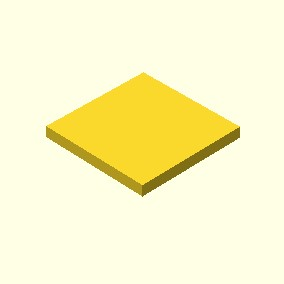

Creates a square or rectangle in the first quadrant. When center is True the square is centered on the origin.
square(size = x, center = True/False)
square(size = [x, y], center = True/False)
examples:
square(size = 10, center = True)
square(size = [5, 10], center = False)